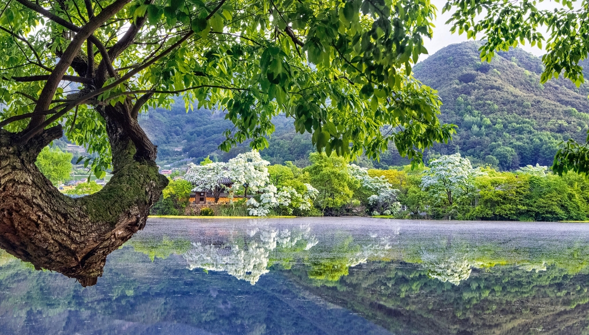
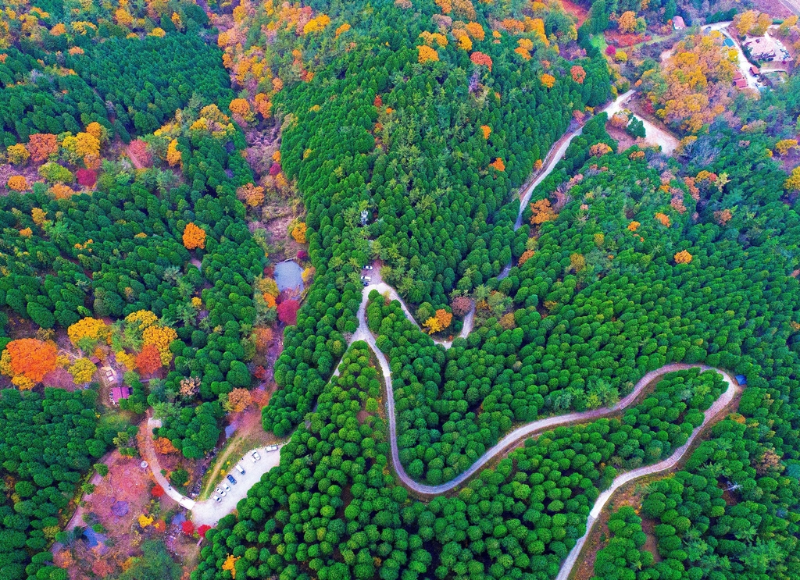

이미지 기준 좌측 정렬

남부지방 자생종 등 식물 3천100여 종이 민속식물원 등 주제별로 조성된 진주 경남수목원은 가족·연인 간 힐링 산책코스로 주목받는다.
통영 나폴리농원에서는 맨발로 17개의 코스를 걸으며 피톤치드와 숲이 주는 치유와 휴식을 경험할 수 있다.
사천 비토섬 캠핑·해상 캠핑에서는 천혜의 바다 위에서 자연을 감상하며 낚시를 즐길 수 있으며 썰물 때에는 갯벌 체험도 가능하다.
김해 한옥체험관·가야의 거리에서는 7개동 13개 객실을 갖춘 전통한옥을 체험할 수 있으며 주변 수로왕릉 돌담길 앞에서 고즈넉한 여유와 낭만까지 느낄 수 있다.
밀양 위양못에는 5개의 작은 섬과 완재정이라는 정자가 있다. 특히 이팝나무 꽃이 만발하는 5월이 되면 그 아름다움이 절정을 이룬다.
해금강이 한눈에 들어오는 거제 남부면 우제봉전망대는 쪽빛 바다 위 다도해의 풍경과 시원한 바람이 가슴을 활짝 열어젖히는 경험을 선사한다.
청정 수질을 자랑하는 양산 법기수원지는 침엽수림인 측백나무와 편백을 비롯해 높이 30∼40ｍ에 달하는 개잎갈나무, 둑 위에 있는 수십 년 된 반송나무 등이 절경으로 꼽힌다.
이미지 기준 우측 정렬

의령 벽계 야영장은 여름에도 찬비가 내린다는 한우산 자락·계곡이 함께 어우러진 아름다운 경치를 자랑하며 몸과 마음을 동시에 치유할 수 있다.
함안 강나루생태공원에서는 낙동강을 끼고 광활하게 펼쳐진 청보리가 보는 이들의 마음마저 시원하게 만든다.
국내 최대 규모 자연 내륙습지인 창녕 우포늪은 물닭과 쇠물닭 등 철새의 분주한 모습과 자줏빛 자운영을 보며 봄기운을 만끽할 수 있다.
고성 갈모봉 산림욕장은 70여㏊ 임야에 수령 30∼50년생의 편백이 울창한 산림을 이루고 있다. 산책로를 비롯해 산림욕대, 쉼터, 체력단련실을 갖추고 있으며 편백림에서 나오는 피톤치드 향으로 많은 인기를 누리고 있다.
남해 섬이정원은 다랑논을 그대로 살려 만든 경남 1호 민간정원이다. 다랑논의 높낮이를 이용한 9개의 작은 정원이 이국적인 풍경을 자아내며 유럽식 정원의 다양한 포토존을 갖춰 최근 떠오르는 관광지로 인기를 얻고 있다.
하동 옥종 편백 자연휴양림은 알프스 하동의 대표 힐링 명소다. 둘레 1ｍ, 높이 15ｍ에 이르는 편백 약 20만 그루가 울창한 숲을 이루고 있다.